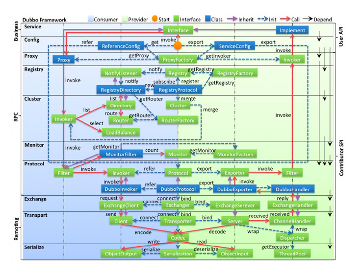

Dubbo架构体系
概述
Dubbo是阿里巴巴公司开源的一个高性能优秀的服务框架，使得应用可通过高性能的 RPC 实现服务的输出和输入功能，可以和 Spring框架无缝集成。
Dubbo是一款高性能、轻量级的开源Java RPC框架，它提供了三大核心能力：面向接口的远程方法调用，智能容错和负载均衡，以及服务自动注册和发现。
Dubbo基本使用
Dubbo与SpringBoot的整合
基于Zookeeper实现Dubbo与Spring Boot的集成整合。
顶级工程pom依赖
1 | <properties> |
公用RPC接口工程
1 | public interface OrderService { |
服务端工程
1、pom依赖
1 | <dependencies> |
2、RPC服务接口
1 |
|
通过DubboService注解， 声明为RPC服务，version可以标识具体的版本号， 消费端需匹配保持一致。
3、工程配置
1 | # 服务端口 |
消费端工程
1、pom依赖
1 | <dependencies> |
2、消费端调用
1 |
|
3、工程配置
1 | # 服务端口 |
Dubbo高阶配置运用
不同配置覆盖关系
配置规则：
方法级优先，接口级次之，全局配置再次之。
如果级别一样，则消费方优先，提供方次之。
属性配置优先级
优先级从高到低：
- JVM -D 参数；
- XML（application.yml/application.properties）配置会重写dubbo.properties 中的，一般配置项目特有的
- Properties默认配置（dubbo.properties），仅仅作用于以上两者没有配置时，一般配置全局公共配置
重试与容错处理机制
容错机制：
Failfast Cluster
快速失败，只发起一次调用，失败立即报错。通常用于非幂等性的写操作，比如新增记录。
Failsafe Cluster
失败安全，出现异常时，直接忽略。通常用于写入审计日志等操作。
Failback Cluster
失败自动恢复，后台记录失败请求，定时重发。通常用于消息通知操作。
Forking Cluster
并行调用多个服务器，只要一个成功即返回。通常用于实时性要求较高的读操作，但需要浪费更多服务资源。可通过 forks=”2” 来设置最大并行数。
Broadcast Cluster
广播调用所有提供者，逐个调用，任意一台报错则报错。通常用于通知所有提供者更新缓存或日志等本地资源信息。
多版本控制
根据指定的版本，消费端和服务端必须一致，否则无法远程调用
本地存根调用
负载均衡机制
默认负载策略
Dubbo默认采用的是随机负载策略。
开启三个服务节点，通过消费端访问验证： http://127.0.0.1:18084/order/getOrder?orderId=123
通过控制后台日志输出， 可以看到每个服务节点呈现不规则的调用。
Dubbo 支持的负载均衡策略，可用参看源码：
AbstractLoadBalanceRandom LoadBalance：默认
随机，按权重设置随机概率。 在一个截面上碰撞的概率高，但调用量越大分布越均匀，而且按概率使用权重后也比较均匀，有利于动态调整提供者权重。
RoundRobin LoadBalance
加权轮询负载均衡，按公约后的权重设置轮询比率。 存在慢的提供者累积请求的问题，比如：第二台机器很慢，但没挂，当请求调到第二台时就卡在那，久而久之，所有请求都卡在调到第二台上。
LeastActive LoadBalance
最少活跃调用数，相同活跃数的随机，活跃数指调用前后计数差。 活跃数其实就是在当前这个服务调用者中当前这个时刻 某个invoker（某个服务提供者的某个接口）某个方法的调用并发数，在调用之前+1 调用之后-1的一个计数器，如果出现多个活跃数相等invoker的时候使用随机算法来选取一个
ConsistentHash LoadBalance
一致性 Hash，相同参数的请求总是发到同一提供者。 当某一台提供者挂时，原本发往该提供者的请求，基于虚拟节点，平摊到其它提供者，不会引起剧烈变动。
一致性Hash负载均衡涉及到两个主要的配置参数为hash.arguments 与hash.nodes。
hash.arguments ： 当进行调用时候根据调用方法的哪几个参数生成key，并根据key来通过一致性hash算法来选择调用结点
hash.nodes： 为结点的副本数
ShortestResponseLoadBalance
2.7.7 +新增
最短响应时间负载均衡
从多个服务提供者中选择出调用成功的且响应时间最短的服务提供者，由于满足这样条件的服务提供者有可能有多个。所以当选择出多个服务提供者后要根据他们的权重做分析，如果权重一样，则随机
服务降级运用
Dubbo源码分析

服务导出
如图所示，在ServiceConfig执行export方法，根据接口实现代理对象，对方法进行增强，并封装成invoker对象，在拦截增强执行invoke方法内，通过SPI自适应机制生成对应的Expoter对象，一层一层封装handler对象，最终在最底层Server对象中开启netty监听，并在zookeeper中注册资源信息，最终完成服务端的启动